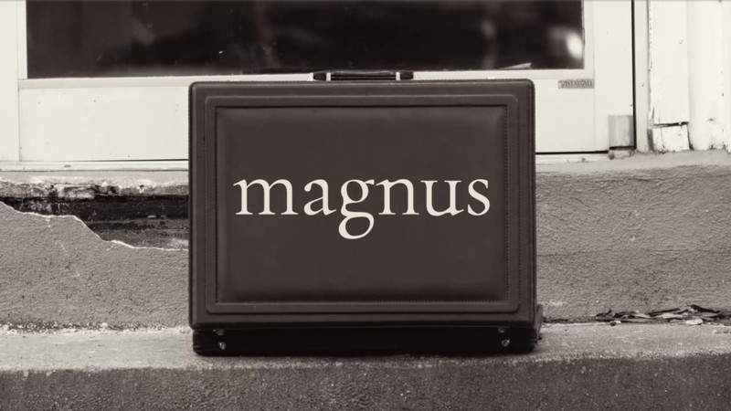
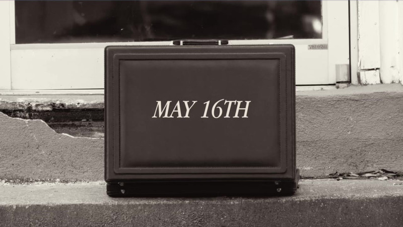
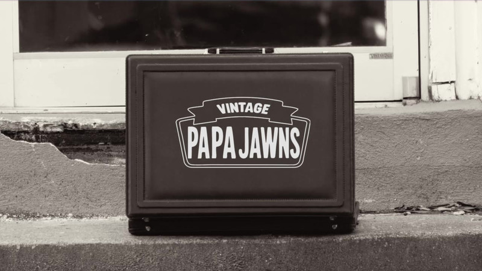
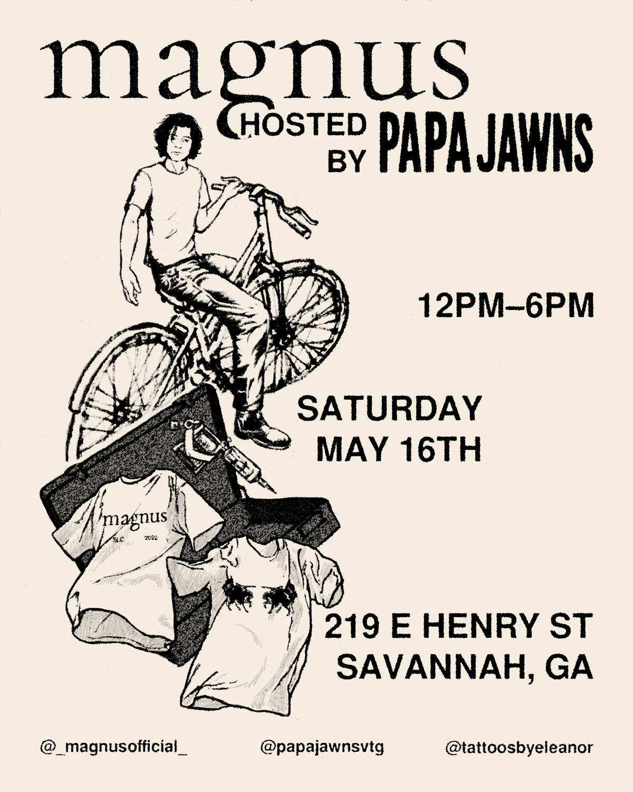
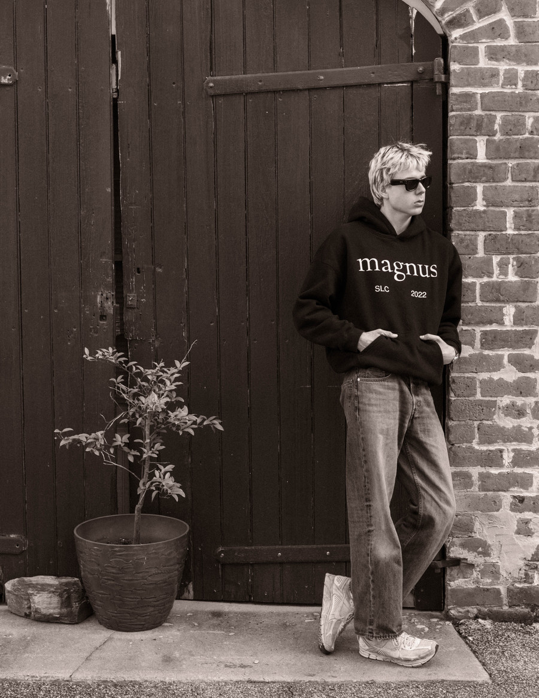
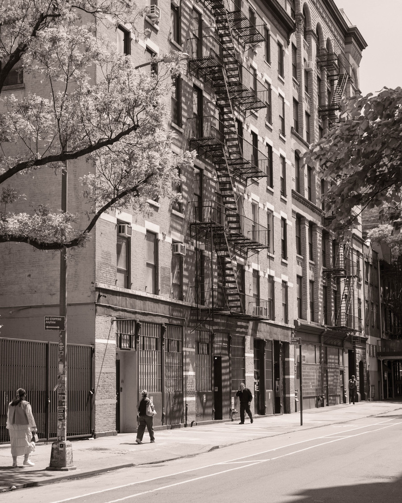

Magnus × Papa Jawns
One Saturday
A label with no shop, given a shop for one Saturday.
Papa Jawns sells vintage out of a brick storefront on East Henry Street. For six hours on 16 May they handed part of it to Magnus, with a tattoo artist working in the corner. One day, one room, no media behind it. Everything had to be carried in and everything had to earn a walk across town.
No store. A case and a bike.
Not a lookbook and not an invitation card. The brand gets packed into one hard case, strapped under an arm, and ridden across Savannah to the door of somebody else’s shop. The delivery is the advertisement: it says how small the operation is and makes that the reason to come.
It ends on the case set down on the kerb, which then does the work a title card would normally do.
The case



The poster
Drawn by hand, printed on cream, and pinned up around the neighbourhood. It had to work as the only thing anyone would see: the serif Magnus wordmark against the host’s slab lettering, the rider and the pile of clothes carrying the picture, and the three things a flyer actually has to say, set large enough to read from a pavement. Both shops and the tattoo artist are credited across the foot.

The season
The stills stay deliberately secondary here. The film does the arguing; the photography only has to show the goods and the register the brand shoots in.


A pop-up like this has one number that matters, which is how many people walk through a door they were not already walking through. Everything above is built to move that number on a budget of a poster, a borrowed room and a bicycle.